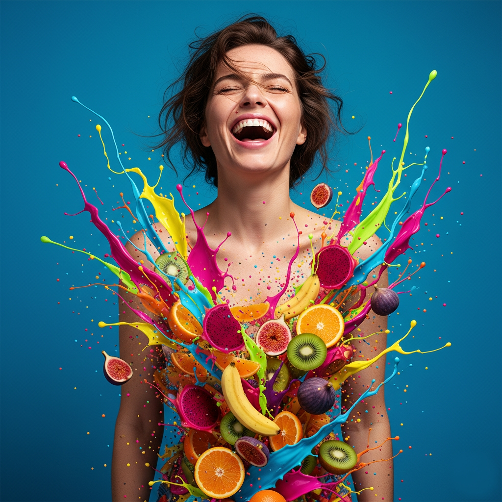

Digital Dust: Why Your Memories Are Fading and How to Save Them The Tragedy of the Invisible Archive
We are the most photographed generation in human history. Every second, millions of shutters click, capturing birthdays, sunsets, and the fleeting expressions of our loved ones. Yet, we are standing on the precipice of becoming the "Lost Generation." Our memories are no longer kept in cedar chests or leather-bound albums; they are trapped in the "Digital Ether"—a fragile graveyard of pixels waiting for a power failure to vanish forever.
The irony of the 21st century is that while we have the tools to capture everything, we have lost the will to preserve anything. Your photos are currently living as mathematical code on a spinning disk or a remote server. If you don't act, your grandchildren won't find a box of photos in the attic; they will find a dead hard drive and a forgotten password to a defunct cloud service.
Read moreWhy 'Imperfect' Photos are Your Greatest Strength in 2026

In an era saturated with AI-generated perfection and overly polished filters, the world is facing "aesthetic fatigue. " Users today are subconsciously scrolling past flawless stock images in search of something they haven’t seen in years: the truth. Raw, "imperfect" photography—featuring natural skin textures, motion blur, or candid expressions—has become the ultimate signal of trust and authenticity.
Read moreThe Soul of the Grain: Why Analog-Inspired Photography is the New Premium Standard
The Return of the "Human Touch" In an era where digital images are generated in seconds by algorithms, perfection has become a commodity. High-definition, AI-sharpened, and hyper-realistic photos are everywhere—and because of that, they are losing their value.
Read more